CS 463G & CS 663
(Intro to) AI
Lecture 13: Constraint Satisfaction Problems
Fall 2026
Constraint Satisfaction Problems
A constraint satisfaction problem (CSP) describes what a solution must satisfy, separately from how we find it.
| Piece | Meaning | Exam-scheduling example |
|---|---|---|
| Variable X_i | A decision to make | The time slot for exam i |
| Domain D_i | Allowed values for X_i | Slots \{1,2,3\} |
| Constraint | A rule on allowed combinations | Conflicting exams use different slots |
A solution assigns a domain value to every variable and satisfies every constraint.
The same framework describes Sudoku digits, map colors, and queen positions.
A Small Exam Schedule
Exams A, B, C, D each take one of three nonoverlapping slots.
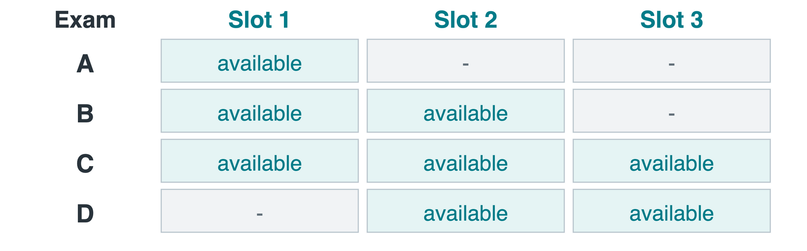
- Shared students prevent these pairs from overlapping: AB, AC, BD, CD.
- Assume enough rooms for any exams that may run together.
Which decisions need variables? Do rooms need to be represented?
Variables, Domains, and the Graph
Let X_A be A’s slot, with remaining domain D_A; use the same notation for B, C, and D.
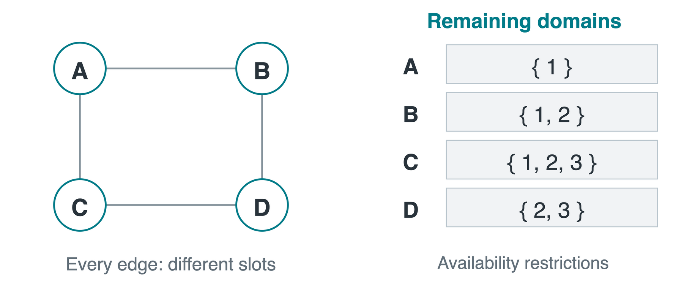
A constraint graph has one node per variable. An edge joins two variables constrained together; here, each edge means different slots.
There is no B-C edge: B and C may share a slot. This is not a search tree or a travel map.
Complete and Consistent
Complete: all variables have values. Consistent: assigned values are in their domains and violate no constraint among them.
Tuples below list (X_A,X_B,X_C,X_D) in that order.
| Assignment | Complete? | Consistent? |
|---|---|---|
| X_A=1,\ X_B=2 | No | Yes |
| X_A=1,\ X_B=1 | No | No: AB |
| (1,2,2,2) | Yes | No: BD, CD |
| (1,2,2,3) | Yes | Yes |
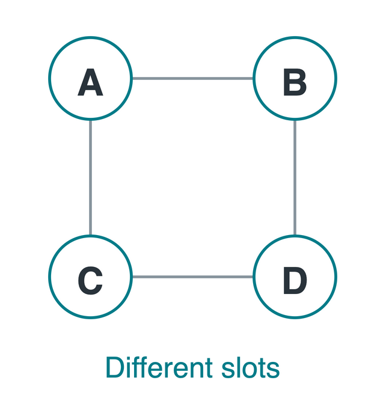
Only the last row is a solution. A consistent partial assignment is not yet a solution.
A Domain-Reduction Trace
Constraint propagation removes values ruled out by the constraints. A singleton domain contains just one value, so that value is forced.
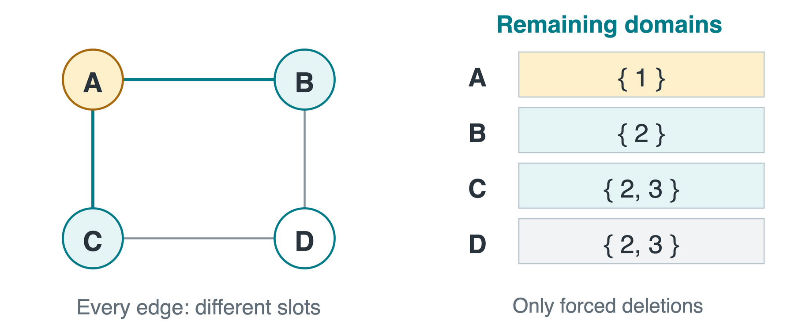
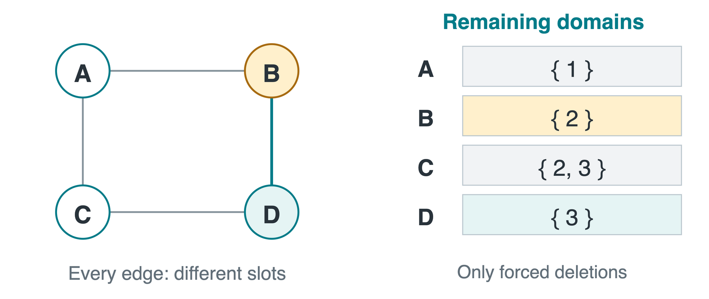

X_A=1 removes 1 from D_B and D_C.
X_B=2 removes 2 from D_D.
X_D=3 removes 3 from D_C. Solution: (1,2,2,3).
One More Conflict
A student now takes both B and C. Add the rule X_B\ne X_C, keeping the same availability restrictions.
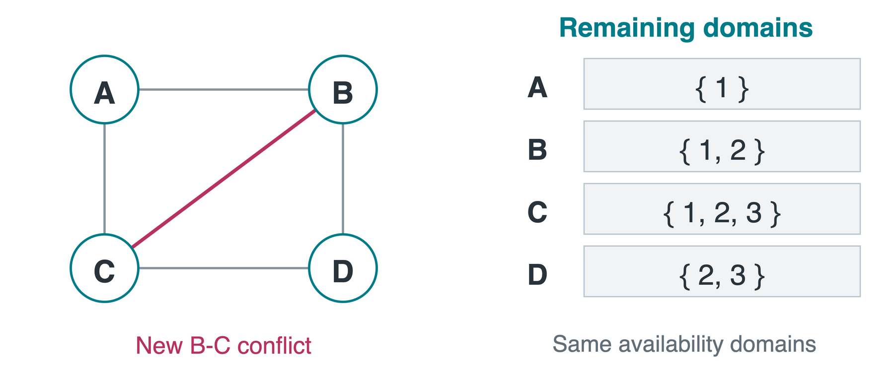
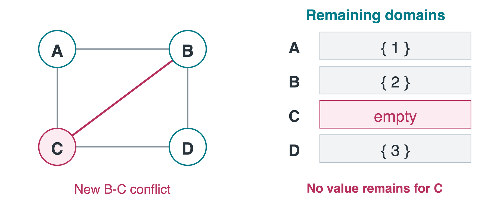
Can all requirements still be satisfied?
No. A, B, and D force slots 1, 2, and 3. C has no remaining value: D_C=\varnothing.
Unary, Binary, and Global Constraints
The arity of a constraint is the number of variables it involves.
| Kind | Example | Meaning |
|---|---|---|
| Unary | X_A=1 | A rule on one variable |
| Binary | X_A\ne X_B | A rule on two variables |
| Global | \operatorname{AllDifferent}(X_1,\ldots,X_9) | A structured rule on a collection |
\operatorname{AllDifferent}(X,Y,Z) requires every pair to differ:
X\ne Y\quad\land\quad X\ne Z\quad\land\quad Y\ne Z.
Do X\ne Y and Y\ne Z alone imply all three are different? No: (X,Y,Z)=(1,2,1) satisfies both.
A Consistent Start Can Still Fail
A separate example has three exams, all conflicting with each other, and only slots 1 and 2. Assign X_A=1.
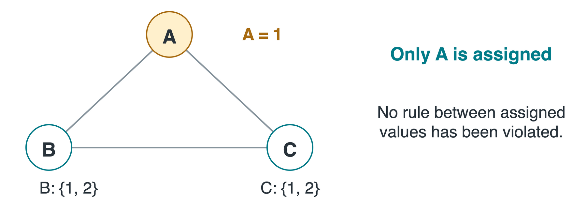
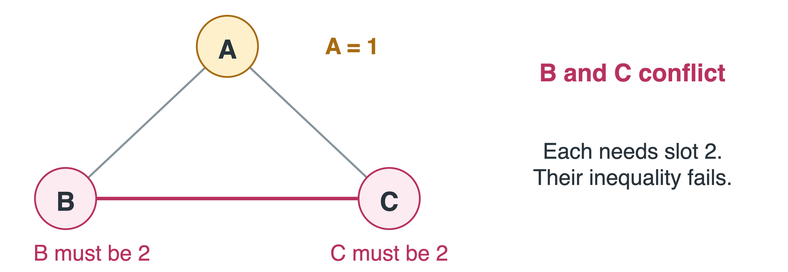
Consistent so far: X_A=1 violates no constraint among assigned exams. Can we assign B and C too, while satisfying every constraint?
No. B and C would both need slot 2, but they conflict. Starting with X_A=2 fails symmetrically.
Feasibility and Preferences
| Kind | Meaning | Scheduling example |
|---|---|---|
| Hard constraint | Must be satisfied | No simultaneous exams for a shared student |
| Soft preference | Ranks feasible assignments | Prefer fewer exams in slot 3 |
For n exams with slots X_1,\ldots,X_n, one possible objective is
\min_X \sum_{i=1}^{n}\mathbf{1}\{X_i=3\}\quad\text{subject to all hard constraints}.
The indicator is 1 when exam i uses slot 3, and 0 otherwise.
A basic CSP seeks feasibility. Constraint optimization also compares feasible assignments.
Sudoku as a CSP
Fill the 9\times9 grid with digits 1 through 9, preserving the given clues.
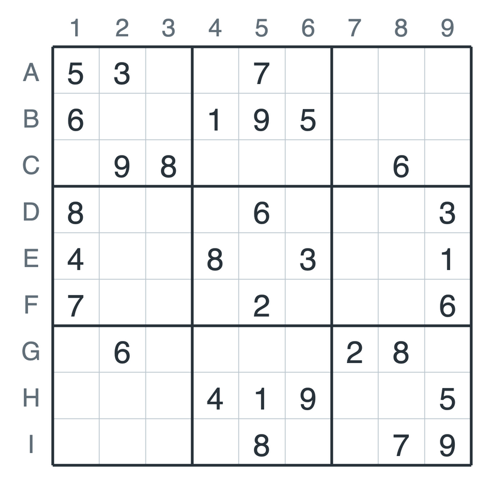
- Variables: the 81 cells, named A1 through I9.
- Domains: \{1,\ldots,9\} for blanks; a singleton for each clue, such as D_{\mathrm{A1}}=\{5\}.
- Constraints: each row, column, and 3\times3 block contains all nine digits exactly once.
Clues are fixed values, not suggestions. The initial puzzle is a partial assignment.
Rows, Columns, and Blocks
A Sudoku unit is a row, column, or block. Each unit has an \operatorname{AllDifferent} constraint.
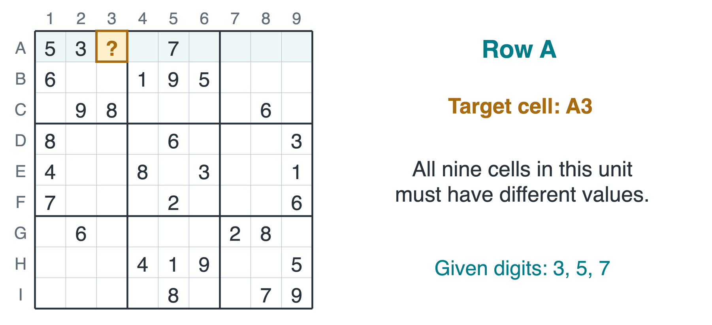
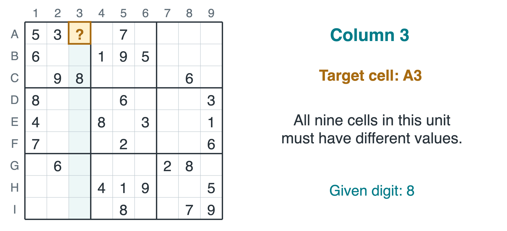
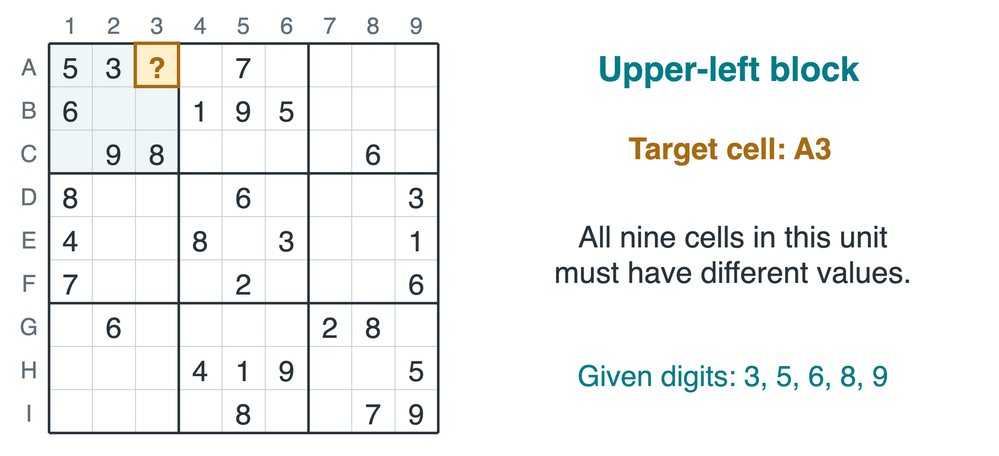
The same cell also participates in its column constraint.
And its block constraint. There are 27 units: 9 rows, 9 columns, 9 blocks.
Candidate Values for A3
Exclude digits assigned to A3’s peers: its row, column, or block.
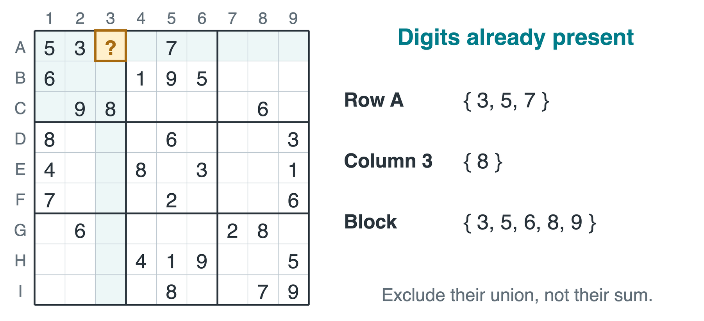
Which values remain in D_{\mathrm{A3}}?
D_{\mathrm{A3}}=\{1,\ldots,9\}\setminus\{3,5,6,7,8,9\}=\{1,2,4\}.
Remaining candidates are not guaranteed to extend to a solution.
Forced Values and Propagation
Using the same clues, the center cell E5 has only candidate 5.
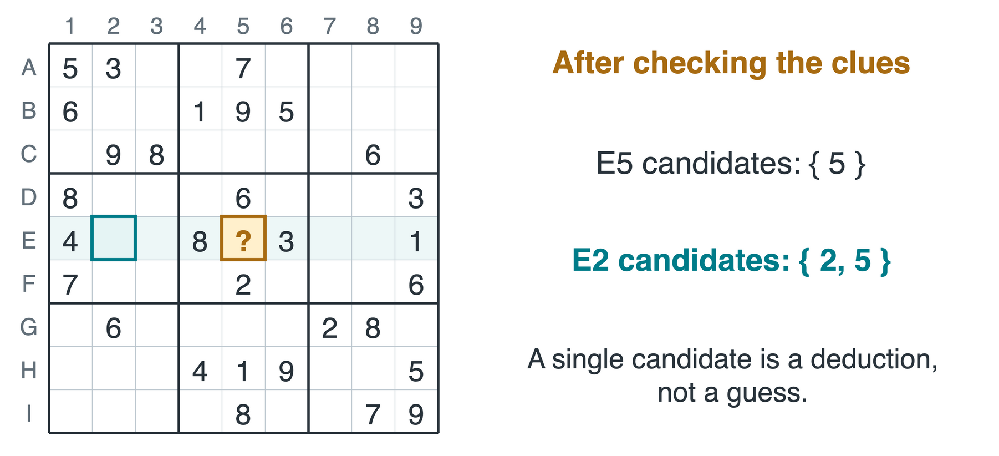
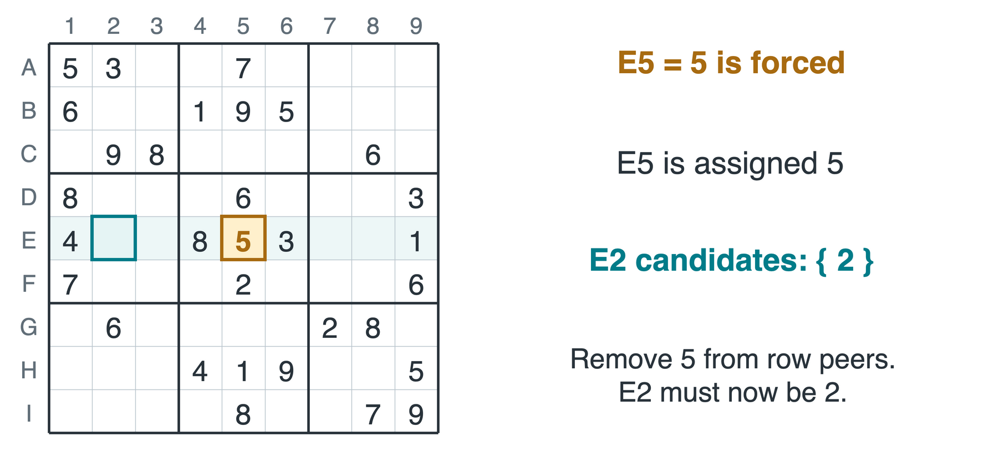
E2 shares E5’s row and currently allows \{2,5\}. What follows?
Set E5 = 5, remove 5 from its peers, then E2 = 2 is forced. A deduction can trigger another deduction.
Search and Propagation
If propagation stalls, search may choose a variable and try a remaining value. A3’s local candidates illustrate possible branches:
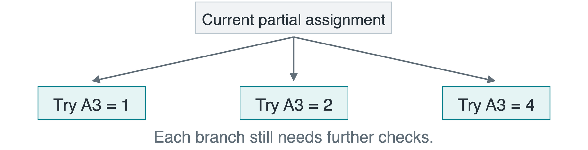
- Propagate: make deductions forced by current constraints.
- Backtrack: undo a tentative choice if its branch fails, then try another.
For m blanks, there are at most 9^m complete fillings before constraints are used. This puzzle has m=51; pruning avoids exploring many of them.
Modeling Practice: A Lab Schedule
Experiments P, Q, R each take one of three equal, nonoverlapping slots \{1,2,3\}.
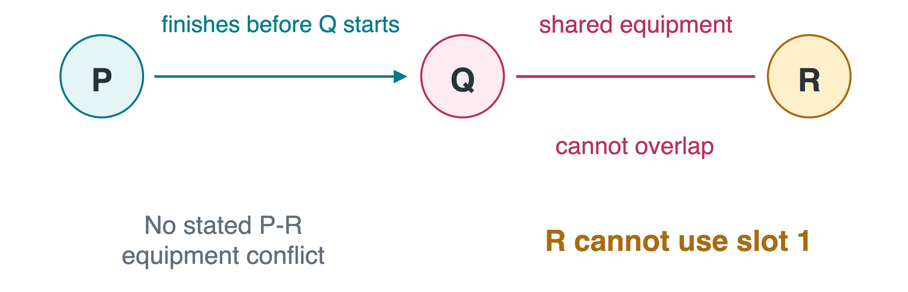
Write the variables, domains, and constraints. Give one valid schedule and one invalid schedule, with a reason.
Lab Schedule: A Formulation
X_P,X_Q,X_R are the slots. D_P=D_Q=\{1,2,3\} and D_R=\{2,3\}.
Constraints: X_P<X_Q and X_Q\ne X_R.
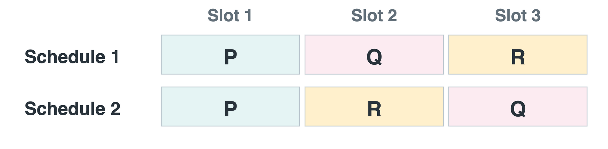
| Assignment (X_P,X_Q,X_R) | Why invalid? |
|---|---|
| (2,1,3) | P does not finish before Q starts |
| (1,2,2) | Q and R need the shared equipment together |
Multiple solutions are allowed; do not invent additional constraints.
N-Queens as a CSP
As in Lecture 12, let Q_i be the queen’s row in column i, with domain D_i=\{1,\ldots,N\}.
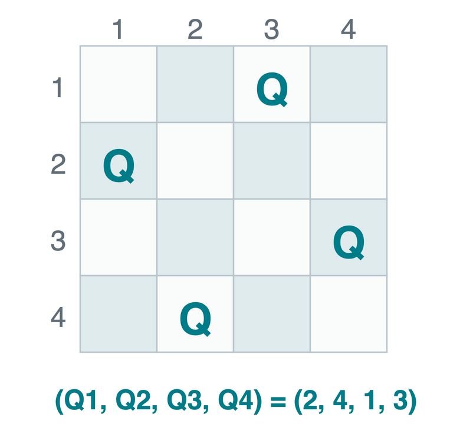
For each pair of columns i<j:
Different rows: Q_i\ne Q_j.
No diagonal attack: |Q_i-Q_j|\ne|i-j|.
One variable per column already enforces one queen in each column.
Same encoding, different formulation: instead of rewarding fewer conflicts, the CSP requires zero conflicts.
Takeaways
| Modeling question | What to specify |
|---|---|
| What decisions must be made? | Variables |
| What values may each decision take? | Domains, including fixed values |
| Which combinations are allowed? | Every required constraint |
| What counts as success? | A complete assignment satisfying all constraints |
- Consistency so far does not guarantee a valid completion.
- Propagation removes impossible values; search handles unresolved choices.
- A solver answers the model we give it, including its assumptions.
Next: how consistency checks prune domains systematically, and how to combine them with search.